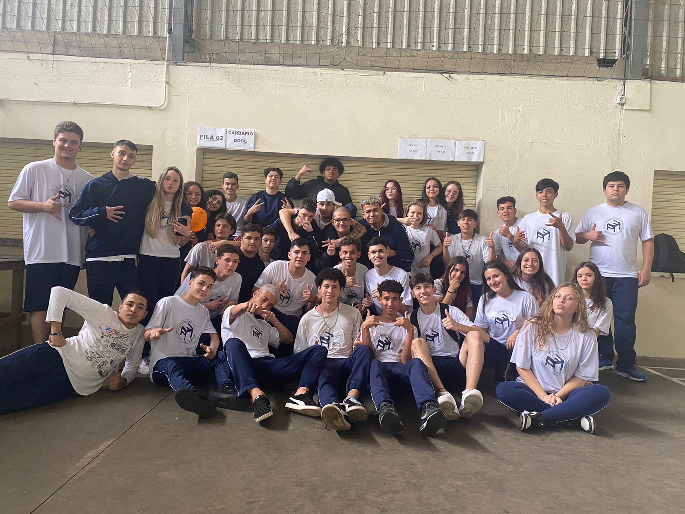
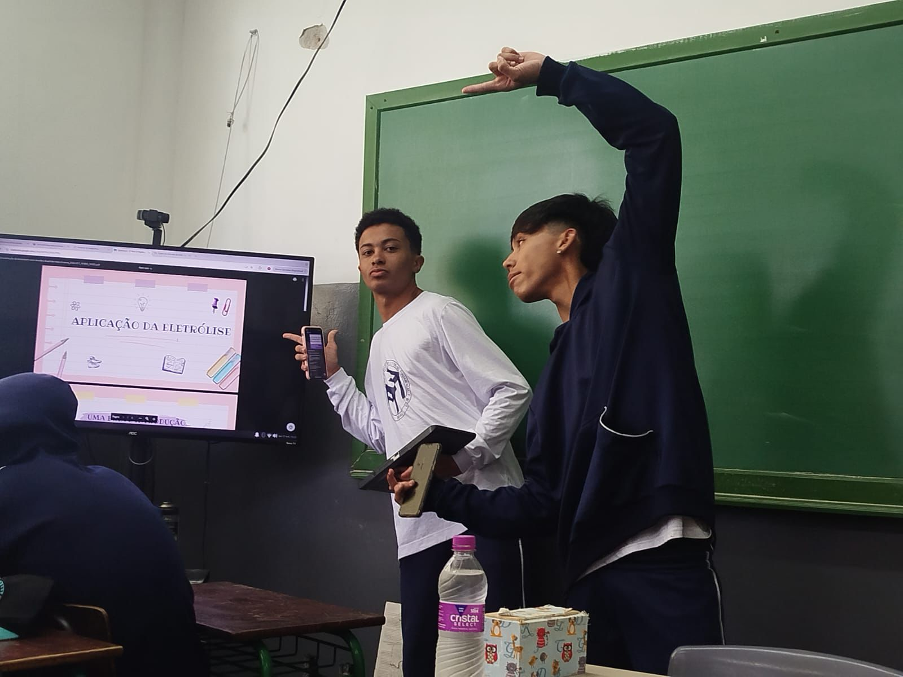

Eu não me lembro de quase nada do 6 ao 9 ano, principalmente do 8 e 9 porque venho a pandemia e nois teve que ficar em casa.Minha turma teste do 6 até o 9 eram as mesma pessoas só mudava uns q entravam a cada ano, mais no 1 ano foi totalmente diferente pois eu estudava a tarde daí mudei para de manhã e separaram todo mundo e foram colocam em salas aleatoriamente, mais fiz boas amizades, e no 1 ano eu me aproximei da poly mesmo estando em salas diferentes sempre estudamos junto mais nunca conversávamos e tu nada nois viramos melhores amigos sem saber oq o futuro nos aguardava.
Tive bons momentos no 1 mais não me lembro bem, dai no final do ano nois tivemos que escolher se íamos para área de exatas ou humanas, então a turma foi separada novamente.Estão no 2 ano tinha poucas pessoas que eu conhecia, e pelo destino eu e a poly caímos na mesma sala.Esse ano foi bom e ruim, não tínhamos educação física, daí tacávamos o terror e jogávamos futebol na sala, teve briga dos mulekes que a professora saiu chorando da sala porque eles saíram no soco na aula dela,muitos momentos bons.
...
Ultima foto do 2 ano: 05/12/23, MORELLI
Este ano está sendo muito bom, eu imaginava no 3 ano ia ser mais difícil do q o normal só que não, umas das coisa que eu tô gostando é de fazer o trabalho da cieli de fazer uma messa de icosaedro , só achei ruim que ainda não vomos para lugar nenhum,mais esse ano está sendo muito bom e cheio de lembranças incríveis. Sempre vou lembrar dessa turma a melhor que eu já estive cada momento cheio de alegria, toda hora eu estou tento risada, mas o melhor de tudo é que minha namorada está na mesma sala e vivendo estes momentos maravilhosos comigo, e pra deixa claro eu amo muito ela...
Momento historico, 1 trabalho q eles fizeram: 17/10/24